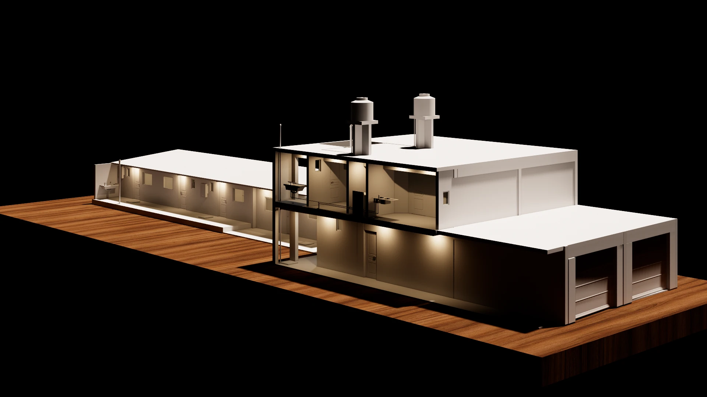
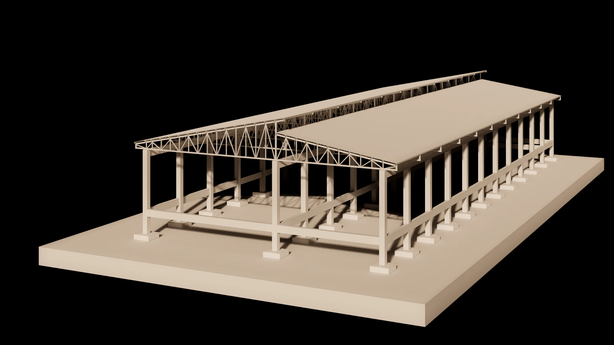
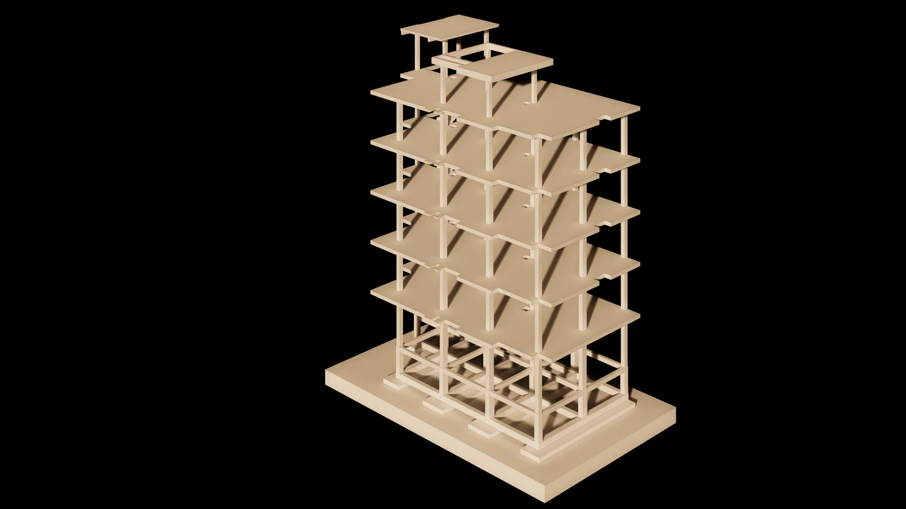

Cálculo verificable en cada entregable.
05+ años de experienciaDesliza para cambiar · doble toque o pellizca para ampliar

Ingeniería estructural · Cochabamba, Bolivia
Cálculo, análisis sísmico y modelado BIM.
Precisión que se nota en cada detalle.

Por qué elegir precisión
Una estructura no se valida cuando se levanta: se valida en la memoria de cálculo. Cada hipótesis, carga y armado queda documentado antes de llegar a obra.
Cálculo verificable en cada entregable.
05+ años de experienciaEdificaciones, cubiertas e infraestructura.
15+ proyectos entregadosCoordinación BIM sin interferencias.
— fichas documentadasAnálisis sísmico y cargas eólicas.
100% de entregables revisadosSoy Ingeniero Civil con más de cinco años de experiencia especializado en Cálculo Estructural y Metodología BIM. Mi trabajo consiste en convertir una intención arquitectónica en un sistema resistente, verificable y construible.
He intervenido en edificaciones multifamiliares, cubiertas metálicas de gran luz, infraestructura social en zonas rurales y proyectos académicos para la Universidad Mayor de San Simón (UMSS), aplicando normativa vigente y coordinando disciplinas mediante modelos BIM.
Sobre mí
Ingeniero Civil · Especialista en Cálculo Estructural y Metodología BIM
Proyectos seleccionados
— fichas en el expediente

Enviarme los planos o la idea. Respondo con criterio técnico y un alcance claro.
Solicitar consultaIng.RubenValero@outlook.com · +591 76982955
Portafolio — · —
Documentación gráfica